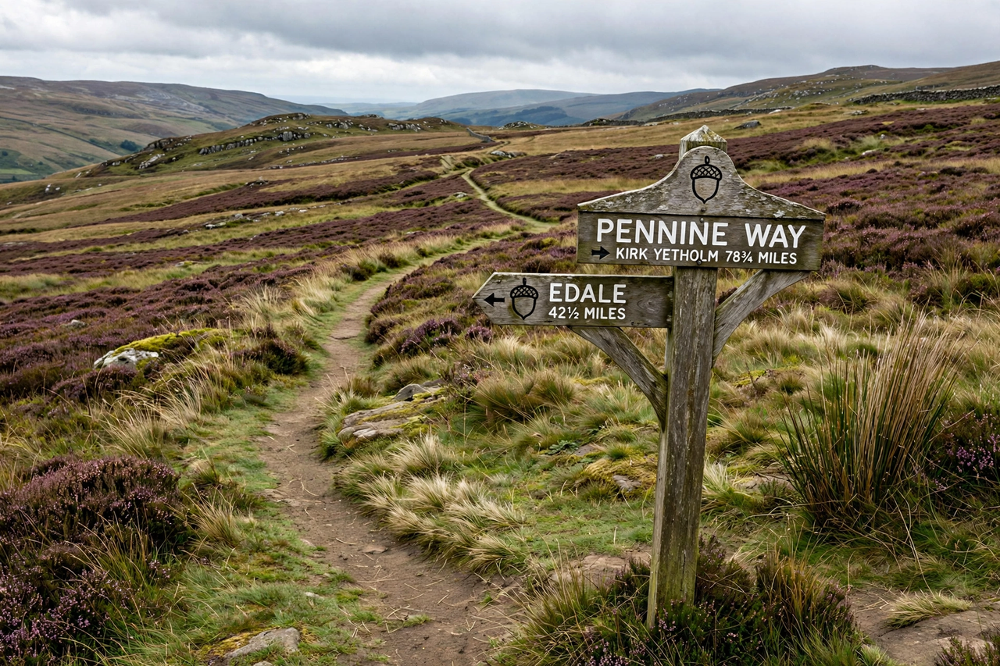

| National Trails (England and Wales) | |
|---|---|
| Number of trails | 16 (plus the King Charles III England Coast Path in progress) |
| Total length | c. 3,000 miles (c. 4,800 km); Coast Path will add c. 2,700 miles |
| First trail | Pennine Way (opened 1965) |
| Managed by | Natural England; Natural Resources Wales; local trail partnerships |
| Waymark | Acorn symbol |

National Trails are long-distance footpaths and bridleways in England and Wales designated and promoted for their quality, and are distinct among British rights of way in being maintained to a high standard, waymarked with an acorn symbol, and managed by dedicated trail officers. The system grew out of the National Parks and Access to the Countryside Act 1949, inspired by campaigners such as Tom Stephenson, who had proposed a "long green trail" along the Pennines after the Second World War. There are currently sixteen National Trails; when complete, the King Charles III England Coast Path — renamed from the England Coast Path in 2023 — will become by far the longest, making England home to the world's longest managed coastal path.
The Pennine Way, opened on 24 April 1965, runs 268 miles (431 km) from Edale in Derbyshire to Kirk Yetholm in the Scottish Borders along the "backbone of England". Other trails include:
Scotland has its own network of Scotland's Great Trails, administered separately; the first, the West Highland Way, opened in 1980.
National Trails are established by Natural England (and in Wales by Natural Resources Wales) and funded mainly by central government grants, with day-to-day management by trail partnerships of local highway authorities. Designated standards cover surfacing, drainage, signposting, and furniture — for instance, gates rather than stiles are preferred where stock control allows. Each trail has an official guide and website, and completion certificates are popular among walkers. The trails pass through some of the most protected landscapes in Britain, including National Parks and National Landscapes (formerly Areas of Outstanding Natural Beauty), and are walked by millions of visitors annually, contributing substantially to rural economies.
Enabled by the Marine and Coastal Access Act 2009, the Coast Path is being opened in sections; when complete it will run for about 2,700 miles (4,350 km) around the entire English coast, with legally secured "coastal margin" access land between the path and the sea, and the unique provision that the route "rolls back" with coastal erosion rather than being lost.